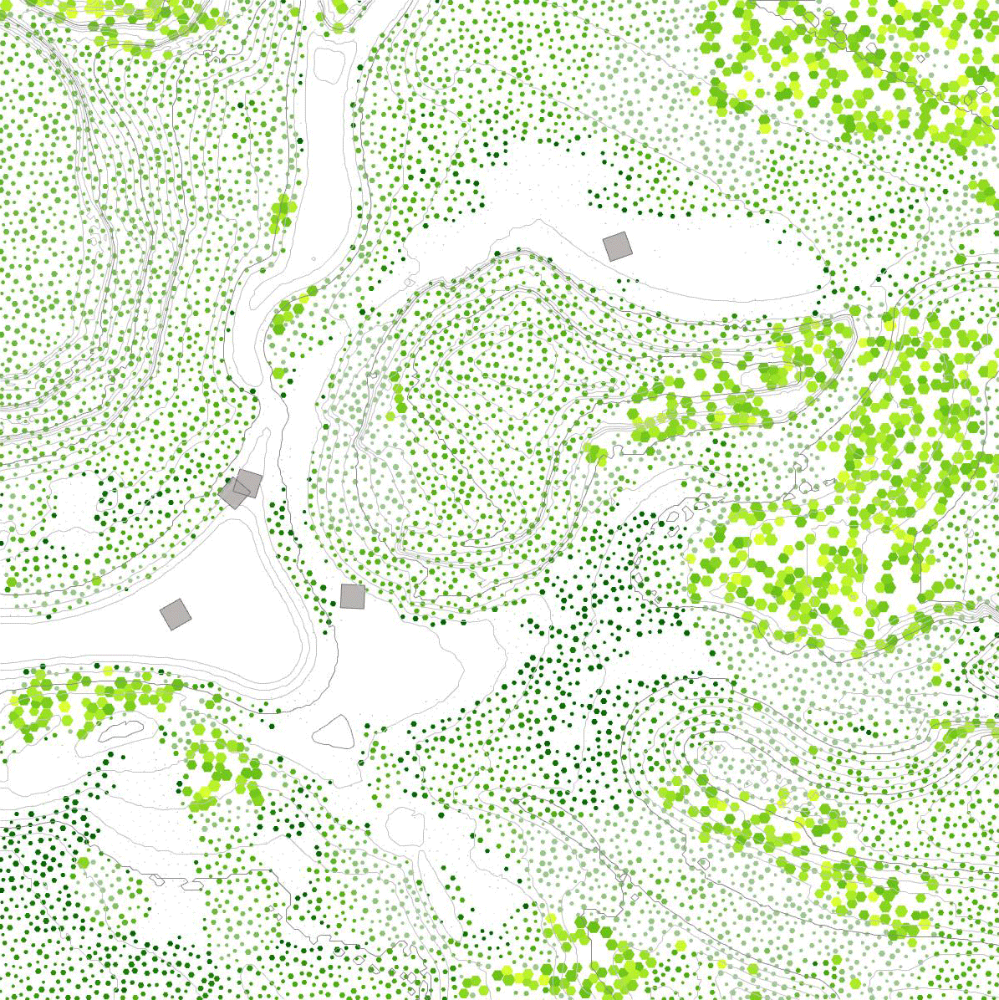
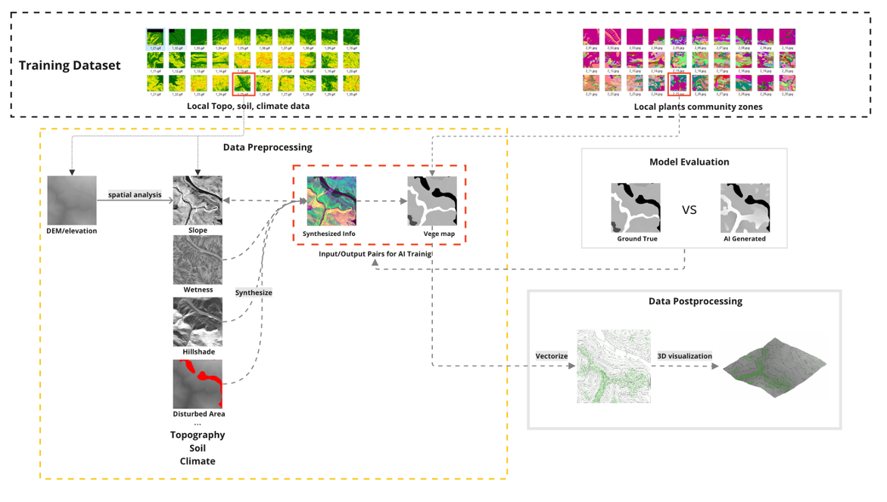
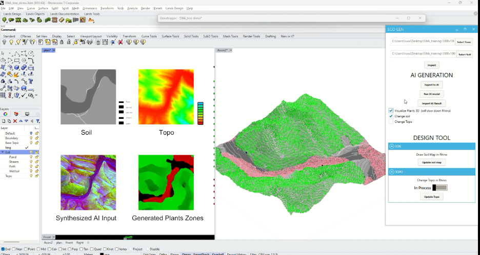
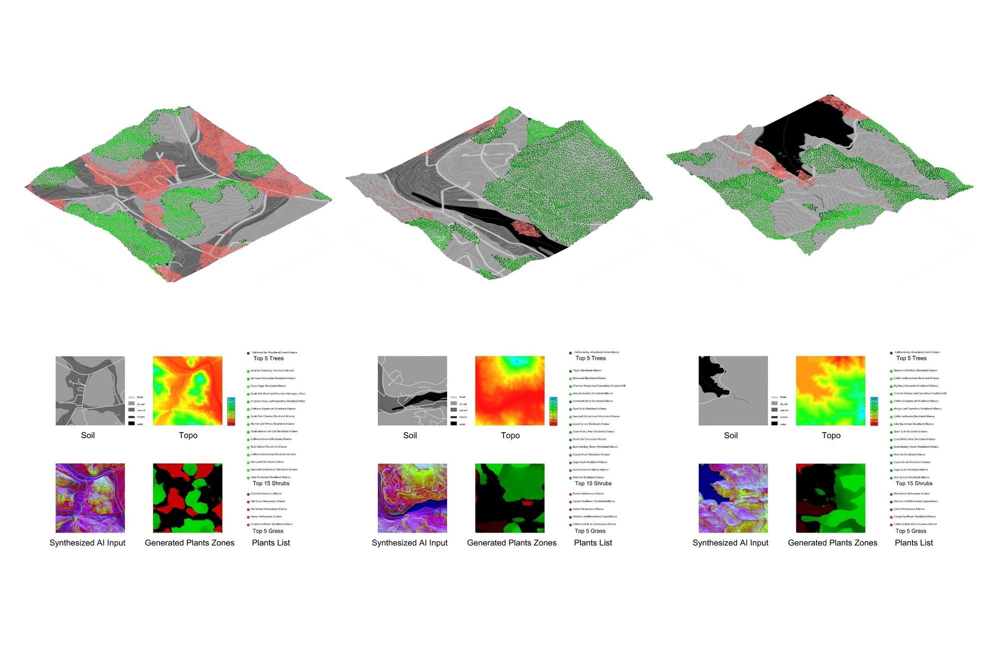
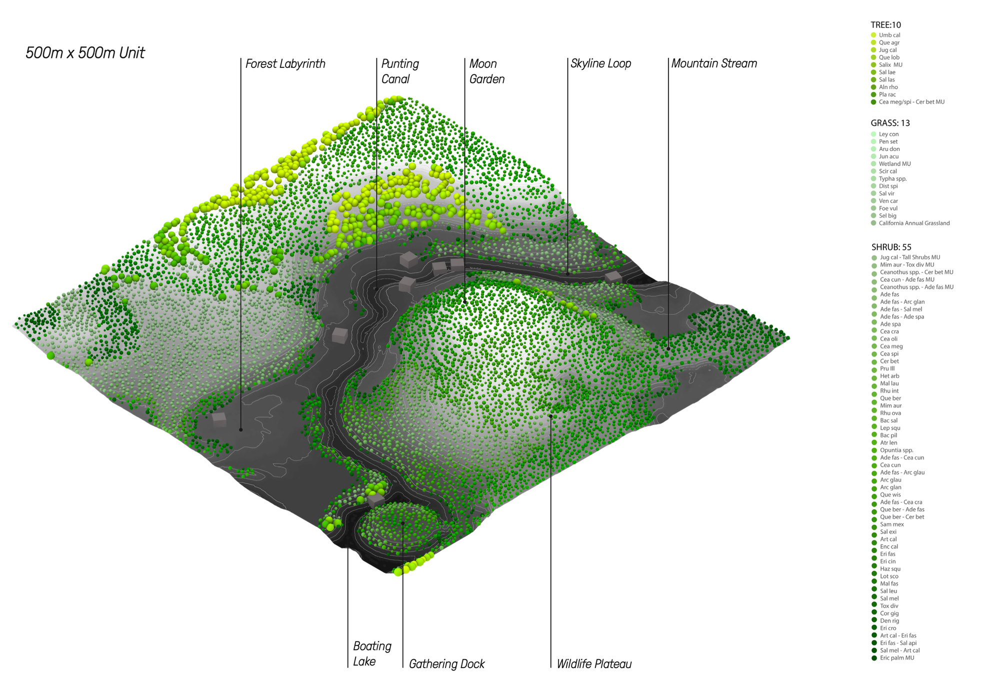
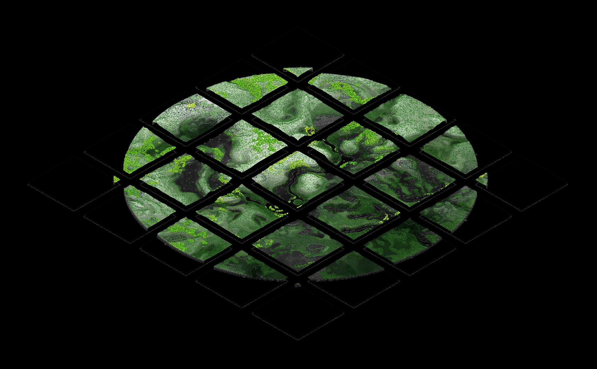
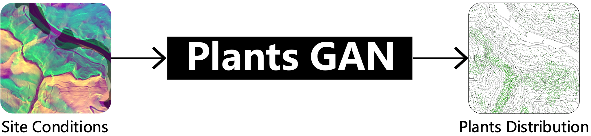

Research · Computation + Landscape · Archive
Reinventing planting design — a generative AI approach.
In the field of landscape architecture, the integration of ecological principles with aesthetic design is a critical yet complex task. This research introduces an innovative AI-driven tool designed to revolutionize planting design by embedding ecological intelligence into the design process. This paper presents the methodology, including data synthesis, AI model training with generative adversarial networks (GANs), and integration into a practical design interface. The model is trained on multifaceted input data such as topography, soil, and climate data. The results indicate the AI model's effectiveness in generating planting layouts that balance ecological accuracy with aesthetic appeal. Significantly, this research extends the professional practice of landscape architecture.
Duration
2023 — 2024
Published
JoDLA / ASLA
Team
Xun Liu — PI
Nandi Yang — Collaborator, SWA
Funding
Patrick T. Curran Fellowship

01 · Method

02 · Tool
The Rhino/Grasshopper interface, prototyped as ECO GEN using HumanUI in Grasshopper.

03 · Results

Three sites — soil + topo in, plants zones and species lists out
04 · Design

500m × 500m unit — programs over the generated planting

